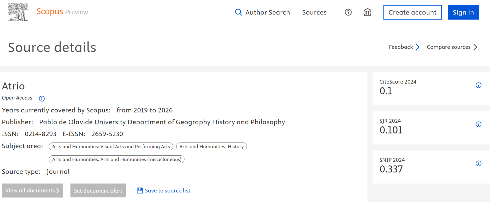

International Multidisciplinary Research Journal
Atrio is an international, multidisciplinary peer-reviewed journal committed to publishing high-quality, original research across academic disciplines. The journal provides a platform for researchers, scholars and professionals to share findings and foster global academic exchange.
About Us
Atrio Journal is an international, multidisciplinary peer-reviewed journal committed to publishing high-quality, original research across all academic disciplines. We provide a platform for researchers, scholars, and professionals to share their findings and foster global academic exchange.
Whether you belong to the field of science, technology, humanities, social sciences, or any other academic area, our journal offers the visibility your work deserves.
Key Details
Aim and Objectives
- To provide a global research platform for all disciplines.
- To promote innovative and interdisciplinary research.
- To ensure quality and integrity through rigorous peer review.
- To support academic and professional development of researchers worldwide.
Scope and Areas Covered
Atrio Journal adopts a multidisciplinary approach, welcoming original research articles, review papers, and case studies in diverse fields including:
- Engineering and Technology
- Computer Science and Artificial Intelligence
- Management and Commerce
- Social Sciences and Humanities
- Arts and Literature
- Education and Pedagogy
- Medical and Health Sciences
- Environmental and Agricultural Sciences
- Law and Public Policy
- Applied Sciences and Interdisciplinary Research
The journal encourages cross-disciplinary collaboration, promoting research that integrates multiple fields to address real-world challenges.
Indexing, Abstracting & Recognition
Atrio Journal (ISSN: 0214-8293) is committed to maintaining high academic standards and increasing the visibility of published research through recognized indexing, abstracting, discovery, DOI and repository platforms.
- Scopus
- Web of Science (WoS)
- Google Scholar
- Crossref (DOI Assignment)
- ResearchGate
- Academia.edu
- Semantic Scholar
- Zenodo (Open Access Repository)
- Directory of Research Journals Indexing (DRJI)
- Index Copernicus (ICV)
- ROAD (Directory of Open Access Scholarly Resources)
- ERIH PLUS
- Latindex
Scopus Source Identification
Digital Identification & Archiving
- Published articles are assigned Digital Object Identifiers (DOI) through Crossref.
- Long-term preservation and accessibility are supported through open-access repositories and digital archiving systems.
Why Indexing Matters
- Increased visibility and discoverability of research
- Greater opportunities for citation and academic dissemination
- Global academic visibility
- Improved discoverability of published research
Scopus Source Details
Scopus Source ID: 21101131061

Article Processing Charges
Publishing a manuscript in Atrio Journal requires the payment of an Article Processing Charge (APC) by the submitting author upon acceptance of the manuscript for publication, according to the following criteria.
Indian Authors
Processing Fee: ₹3,540/-
Includes: Online publication and e-Certificate
Payment Mode: Online
After payment, the following documents must be submitted:
- Completed Registration Form
- Signed Copyright Form
- Scanned copy of payment proof
Send documents to:
editoratrio@yahoo.com
International Authors
Processing Fee: USD 220/-
Includes: Online publication and e-Certificate
After payment, the following documents must be submitted:
- Completed Registration Form
- Signed Copyright Form
- Scanned copy of payment proof
Send documents to:
editoratrio@yahoo.com
Peer Review and Publication Ethics
Atrio Journal follows a strict double-blind peer review process to maintain high academic standards. Submissions are evaluated based on originality, relevance, methodology, and contribution to knowledge.
The journal adheres to standard publication ethics, ensuring transparency, plagiarism-free content, responsible authorship, and unbiased editorial decisions.
Open Access Policy
Atrio Journal follows an open-access model, allowing readers to access published research freely. This supports visibility, accessibility and dissemination of research.
Contact Us
Atrio Journal
ISSN: 0214-8293
Email: editoratrio@yahoo.com
For manuscript submission, registration documents, copyright forms, payment proof, publication queries and editorial communication, please contact the editorial office using the email above.